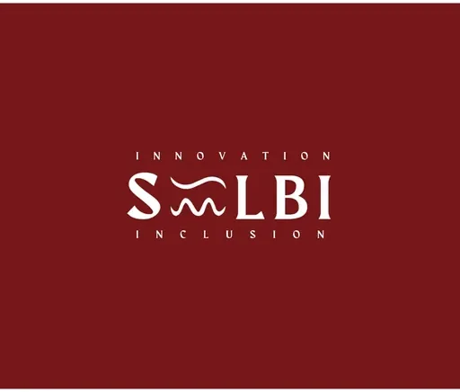

UP Baguio SILBI TBI
University of the Philippines Baguio · CAR
UP Baguio TBI, known as SILBI (Social Innovation Laboratory and Business Inclusion), is the Technology Business Incubator hosted by the University of the Philippines Baguio in Baguio City, Cordillera Administrative Region (CAR). Established under the DOST-PCIEERD Higher Education Institution Readiness for Innovation and Technopreneurship (HEIRIT) program, SILBI serves as a nurturing space for local artisans, crafters, and startups to grow their businesses while promoting and protecting traditional crafts.
- Category
- Technology Business Incubator
- Host institution
- University of the Philippines Baguio
- City
- Baguio City
- Region
- CAR
- Operating status
- Operating
About the Center
Distinct for its cultural focus, SILBI supports creative startups and artisans rooted in folk arts, aligning with Baguio's status as the Philippines' first UNESCO Creative City for Crafts and Folk Arts. It helps small-scale crafters innovate their designs, establish and implement business plans, and develop ways to package and market their crafts. The center is funded through DOST-PCIEERD under the HEIRIT initiative that supported 15 higher education institutions in establishing their own TBIs.
Programs & Services
- Business Incubation Program — Structured support helping artisans, crafters, and startups grow into sustainable enterprises.
- Pre-Incubation & Ideation — Early-stage guidance for creative entrepreneurs shaping their business concepts.
- Business Planning Support — Free assistance with business planning, pricing, and costing.
- Product Development & Design Innovation — Help refining designs and innovating traditional crafts.
- Packaging & Marketing Support — Guidance on packaging, branding, and advertising products.
- Mentoring & Advisory — Coaching from mentors and experts across the incubation journey.
- DOST-PCIEERD Grant & Funding Linkage — Assistance in accessing DOST seed funding and startup grants.
- Market & Network Linkage — Connections to markets, the creative-industry community, and the innovation ecosystem.
Contact
Sources & references
- pia.gov.ph/up-baguios-silbi-program-champions-creative-startups-preserves-i…
- facebook.com/upbsilbitbi
- upgradeinnolab.com/2022/11/heirit-universities-colleges-start-technology-bu…
Details are drawn from public records and the sources above, July 2026.
Startupreneur Innovation Hub · synced from the Notion catalog (July 2026) · status: published.